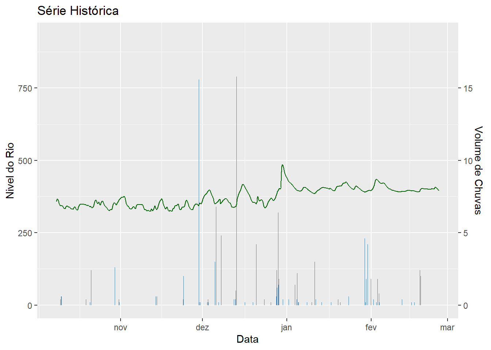

# Pacotes necessários para o relatório:
library(tidyverse)
library(XML)
library(ggplot2)Relatório Reprodutível: Chuvas em Araraquara-SP
Objetivo
O objetivo desse relatório é servir como exemplo para o uso do pacote Quarto na linguagem R montando um relatório reprodutível e com elementos gráficos disponível na web via GitHub. Tal relatório foi criado no contexto de atender aos pré-requisitos de trabalho final para o curso do Programa de Verão do IME - USP “Relatório Reprodutíveis com R” ministrado pela prof.ª Beatriz Milz entre Janeiro e Fevereiro/2022.
Para o exemplo, usaremos dados sobre chuvas na região do município de Araraquara (SP) no período do últimos 5 anos disponibilizados pela ANA - Agência Nacional de Águas e Saneamento Básico. Mais especificamente, este relatório abrange:
- Uso do pacote XML para extração automática de dados na web;
- Tratamento dos dados em modelo de DataFrame usando pacote dplyr;
- Apresentação visual dos dados em tabelas e gráficos (gerados pelo pacote ggplot2)
Por fim, este relatório não tem como função alcançar nenhuma conclusão objetiva sobre os dados apresentados ou gerar insumos para qualquer tipo de tomada de decisão, sendo apenas este um exercício das ferramentas apresentadas e reprodutibiilidade.
Carregando pacotes necessários
Download e Tratamento de Dados
Download de Dados (Base ServiceANA)
# Parâmetros para link:
baseLink = "http://telemetriaws1.ana.gov.br/ServiceANA.asmx/DadosHidrometeorologicos?"
codEstacao = "62776450"
dataInicio = "01/01/2018"
dataFim = "31/12/2023"
linkCompleto = paste0(baseLink, "codEstacao=", codEstacao, "&dataInicio=", dataInicio,
"&dataFim=", dataFim)
dados_xml = xmlParse(linkCompleto)
df_dados = xmlToDataFrame(getNodeSet(dados_xml, "//DocumentElement/DadosHidrometereologicos"))
dplyr::glimpse(df_dados)Rows: 24,398
Columns: 5
$ CodEstacao <chr> "62776450", "62776450", "62776450", "62776450", "62776450",…
$ DataHora <chr> "2023-02-25 21:30:00 ", "2023-02-25 21:00:00 ", "2023-02-25…
$ Vazao <chr> "", "", "", "", "", "", "", "", "", "", "", "", "", "", "",…
$ Nivel <chr> "396.00", "396.00", "396.00", "396.00", "397.00", "397.00",…
$ Chuva <chr> "0.00", "0.00", "0.00", "0.00", "0.00", "0.00", "0.00", "0.…Os dados são obtidos da base Service ANA que é atualizada em intervalos de 30 minutos. O dado mais recente coletado na base é de 2023-02-25 21:30:00
Tratamento dos Dados
# Adicionando colunas para agrupar dados em visões agrupadas:
# Convertando colunas
df_dados$Data = as.POSIXct(df_dados$DataHora)
df_dados = df_dados |>
dplyr::mutate(Chuva = as.numeric(Chuva),
Nivel = as.numeric(Nivel))
# Criando tabela auxiliar para obter valores mínimos e máximos mensais
df_summary = df_dados |>
dplyr::group_by(Ano = lubridate::year(Data), Mes = lubridate::month(Data)) |>
dplyr::summarize(ChuvaTotal = sum(Chuva), MinimoNivel = min(Nivel), MaximoNivel = max(Nivel)) |>
ungroup()
colnames(df_summary)[1:2] = c("Ano", "Mês")Dados sobre volume de Chuvas e Nível
Usando os dados agrupados acima, podemos exibir uma tabela com os valores de precipitação total registrada, níveis mínimos e máximos para cada um dos mesês no período analisado:
# Tabela com dados agrupados:
df_summary |>
knitr::kable()| Ano | Mês | ChuvaTotal | MinimoNivel | MaximoNivel |
|---|---|---|---|---|
| 2018 | 1 | 0.02 | 824 | 967 |
| 2018 | 2 | 0.00 | 784 | 928 |
| 2018 | 3 | 21.40 | 806 | 1000 |
| 2018 | 4 | 5.80 | 789 | 886 |
| 2018 | 5 | 0.40 | 750 | 838 |
| 2018 | 6 | 0.80 | 739 | 792 |
| 2018 | 7 | 1.80 | 718 | 784 |
| 2018 | 8 | 1.00 | 717 | 846 |
| 2018 | 9 | 0.00 | 702 | 832 |
| 2018 | 10 | 0.00 | 719 | 962 |
| 2018 | 11 | 0.00 | 727 | 913 |
| 2018 | 12 | 0.00 | 722 | 861 |
| 2019 | 1 | 0.00 | 757 | 949 |
| 2019 | 2 | 117.20 | 690 | 690 |
| 2019 | 3 | 128.00 | 690 | 690 |
| 2019 | 4 | 94.80 | 690 | 690 |
| 2019 | 5 | 110.40 | 690 | 690 |
| 2019 | 6 | 9.20 | 690 | 690 |
| 2019 | 7 | 0.40 | 690 | 690 |
| 2019 | 8 | 14.20 | 690 | 690 |
| 2019 | 9 | NA | 690 | 761 |
| 2019 | 10 | NA | 690 | 768 |
| 2019 | 11 | NA | 696 | 782 |
| 2019 | 12 | NA | 739 | 855 |
| 2020 | 1 | NA | 722 | 945 |
| 2022 | 10 | NA | 326 | 370 |
| 2022 | 11 | 91.80 | 324 | 375 |
| 2022 | 12 | NA | 336 | 485 |
| 2023 | 1 | 207.40 | 385 | 439 |
| 2023 | 2 | 143.60 | 391 | 434 |
Infelizmente a base de dados contém vários períodos sem informações de chuvas (evidenciado pelos valore ‘NA’) e está sem o período de Fevereiro/2020 até Setembro/2022.
Sabendo disso, podemos montar nosso gráfico com a série histórica a partir de Outubro/2022.
# Filtrando dados para apenas após Outubro/2022:
df_filtrado = df_dados |>
filter(Data >= as.Date("2022-10-01"))
# Gráficos com séries históricas:
ggplot2::ggplot(df_filtrado) +
geom_bar(aes(x=Data, y=Chuva*50), stat="identity", fill = "steelblue") +
geom_line(aes(x=Data, y=Nivel, group=1), stat="identity", color = "darkgreen") +
scale_y_continuous(name = "Nivel do Rio", sec.axis = sec_axis(~./50, name = "Volume de Chuvas")) +
labs(title = "Série Histórica")